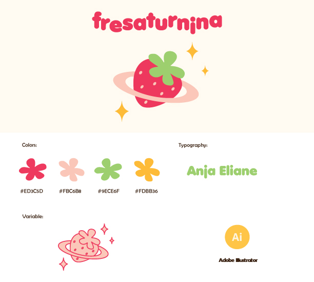

My Portfolio
fresaturnina
This logo design project is an innovative fusion of two distinct elements,
Saturn and strawberries, intended to create a unique brand identity.

The aim here was to create a logo that is not only cute and attractive but that also stands out as
different and memorable. The logo combines the aesthetics of Saturn's ringed planet
with the playful imagery of a strawberry.(2021)